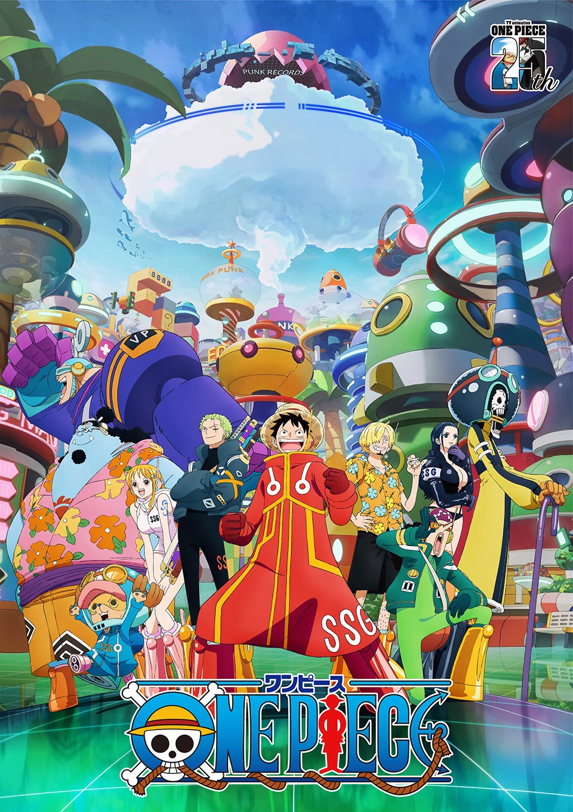
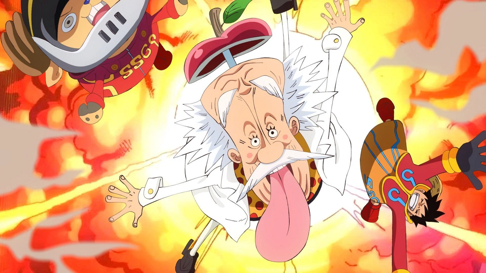
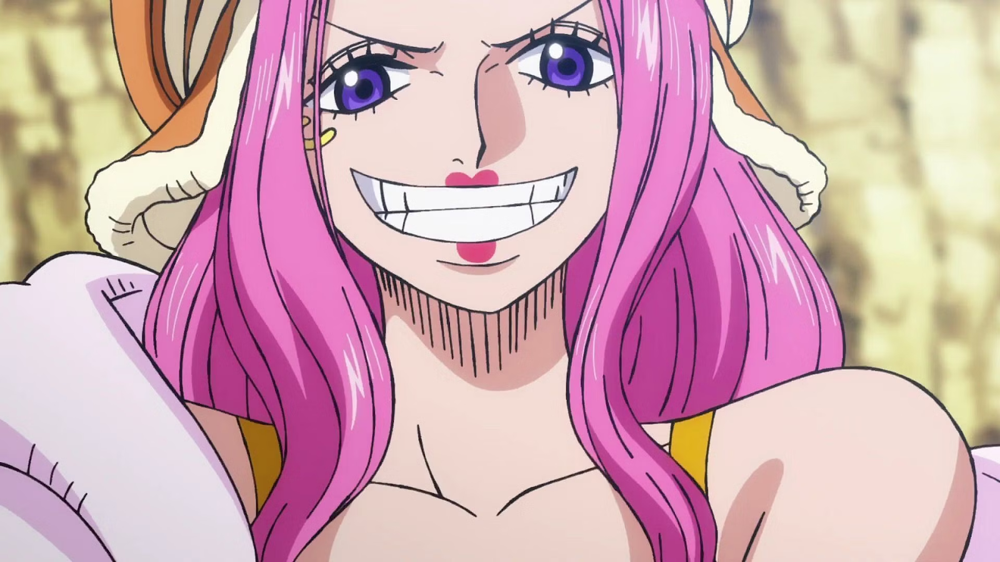
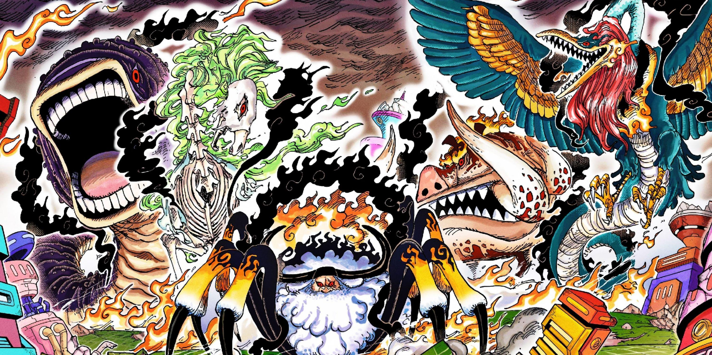
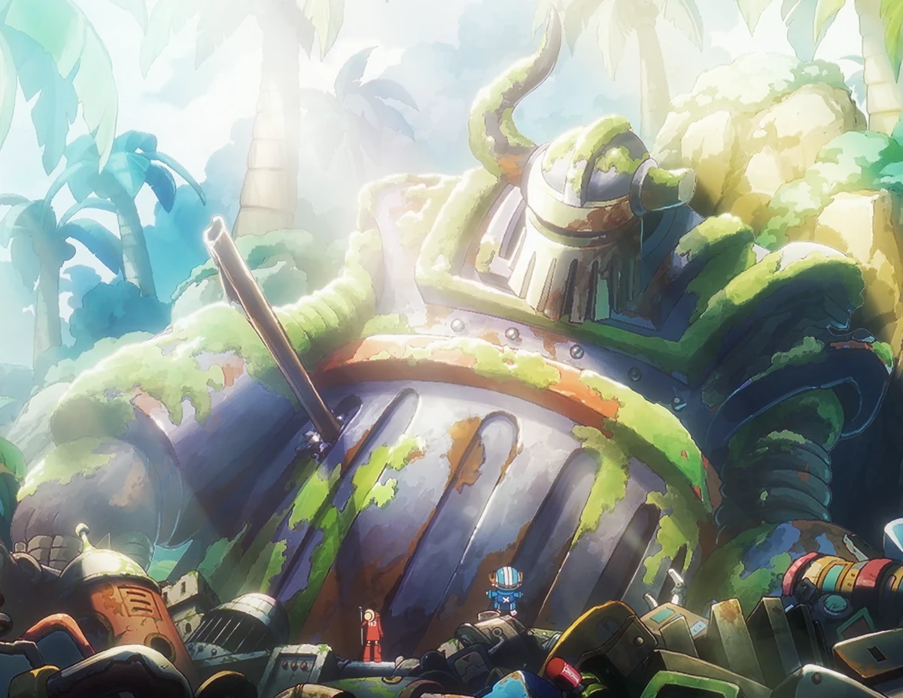

One Piece (un)Official Site
Inici
||
Temporada anterior
||
Joc de cartes
Ja arriba la nova temporada!!
El teu navegador no admet vídeo HTML5.
Recupera la millor Banda Sonora de la sèrie
El teu navegador no admet àudio HTML5.
Galeria d'Imatges
    
Augmentar Mida
Reduir Mida